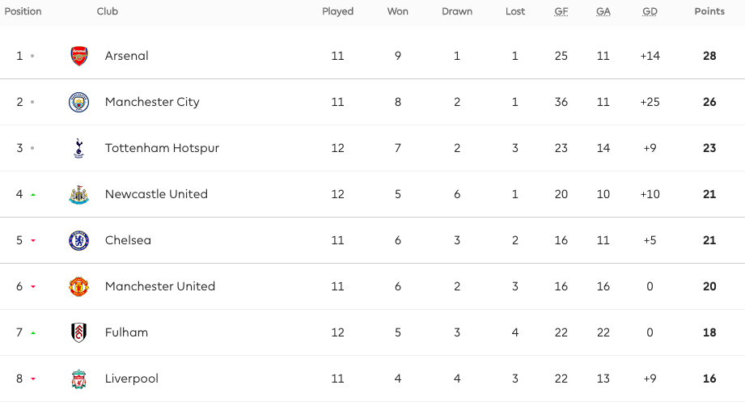

This is the unoffical site of the English Premier League.
The Premier League - The most competetive and entertaining football league in the world.
This english football league is the highest level of the english football league system.
It is among the best of the best and english teams will have to climb the ranks of the
lower tier leagues like the EFL championship, EFL League one and two to get here.
These are the current standings of the top 8 teams.
